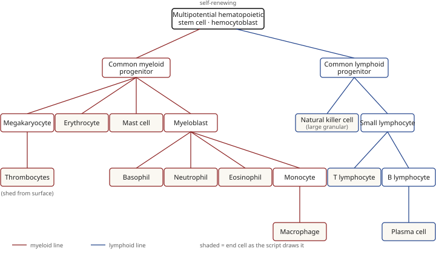

Blood cells & hematopoiesis
Everything numeric and nameable from Script Chapter 1, on one sheet.
Formed elements
| Element | Nucleus | Look on Wright/Giemsa | Numbers | Function / notes |
|---|---|---|---|---|
| Erythrocyte | none | pink (eosinophilic), biconcave disc, pale centre; homogeneous on EM | 7.2 µm · ~120 days | hemoglobin → O₂ transport; internal size reference. Extrudes nucleus like keratinocytes (keratins) and lens fibres (crystallins) |
| Reticulocyte | none | pink with blue strands/dots (RNA in free ribosomes) | ~1 per 100 RBC · matures in 1–2 days | immature RBC released early; Azure B (Giemsa) shows them well |
| Platelet | never | small purple / light pale pink specks | 2–3 µm · 150,000–450,000 per ml · 5–11 days | hemostasis; fragment of a megakaryocyte. Marginal microtubule band, open canalicular system, mitochondria. α: proteoglycans + hemostasis factors · δ (dense bodies): serotonin + Ca++ · λ: lysosomes |
| Neutrophil | multi-lobed, thin strands (band: horseshoe) | tiny light granules, hard to see (neutral affinity) | 60–70% (50–70%); bands 3–5% (≤0.7×10⁹/L) | phagocytose bacteria, foreign cells, toxins, viruses. ↑bands = left shift = infection/inflammation |
| Eosinophil | bilobed | large pink/red granules | 2–4% (<5%) | digestive enzymes vs larval parasitic worms; phagocytose Ag–Ab complexes; end allergic reactions |
| Basophil | bilobed, hidden by granules | large deep blue–purple granules | <1% | histamine (vasodilation) + heparin (anticoagulant); inflammation mediation, like mast cells |
| Lymphocyte | large, round, dense purple; thin rim of cytoplasm | sky-blue cytoplasm; small cell | 20–25% (25–35%) — 2nd most numerous | T: virus-infected & tumour cells · B: → plasma cells → antibodies; act against a specific antigen |
| Monocyte | U / kidney-bean | abundant pale-blue cytoplasm; agranular; largest WBC | 4–8% (3–9%) | diapedesis → macrophage (histiocyte in tissue); phagocytose viruses & bacteria |
Derivative cells (not circulating): plasma cell ← B lymphocyte (antibodies) · histiocyte ← extravascular monocyte (a macrophage).
Stains
| Stain | Components | Use |
|---|---|---|
| Wright | eosin (cytoplasm pink) + methylene blue (nuclei/nucleic acids blue) | routine |
| Giemsa | eosin + methylene blue + Azure B (reticulocytes) | suspected systemic microbial disease |
Colours: RBC pink · platelets light pale pink · lymphocyte cytoplasm sky blue · monocyte cytoplasm pale blue · leukocyte chromatin magenta. Smear: drop → second slide at an angle pulled back to the drop → pushed forward in one motion; good film = smooth, tongue-shaped, feathered edge.
Hematopoiesis
All formed elements come from one self-renewing multipotential hematopoietic stem cell (hemocytoblast), via two lines:

- Common myeloid progenitor
- megakaryocyte → thrombocytes
- erythrocyte
- mast cell
- myeloblast → basophil · neutrophil · eosinophil · monocyte (→ macrophage)
- Common lymphoid progenitor
- natural killer cell (large granular lymphocyte)
- small lymphocyte → T lymphocyte · B lymphocyte (→ plasma cell)
Where: embryo — islands in the yolk sac · after birth — bone marrow · maturation of some cells in peripheral lymphoid organs: T cells in the Thymus; B cells in the bursa of Fabricius (birds) = bone marrow in humans. Regulated by interleukins, colony stimulating factors, TNF-α, TGF-β.
Growth factors by branch point
Signatures (the factor that appears only once): TPO → megakaryocyte/thrombocytes · Epo → erythrocyte · IL-5 → eosinophil · M-CSF → monocyte · G-CSF → neutrophil + basophil. GM-CSF is at every myeloid step. Odd names (FLT-3 ligand, SDF-1, TNF-α, TGF-β1) → lymphoid.
| Step | Factors |
|---|---|
| Stem cell → myeloid progenitor | IL-1, IL-3, IL-6, GM-CSF, SCF |
| Stem cell → lymphoid progenitor | FLT-3 ligand, TNF-α, TGF-β1, IL-2, IL-7, IL-12, SDF-1 |
| Myeloid → megakaryocyte | SCF, TPO, IL-3, GM-CSF |
| Myeloid → erythrocyte | SCF, Epo, IL-3, GM-CSF |
| Myeloid → myeloblast | GM-CSF |
| Myeloblast → basophil | SCF, G-CSF, GM-CSF, IL-3, IL-6 |
| Myeloblast → neutrophil | SCF, G-CSF, GM-CSF, IL-3, IL-6 |
| Myeloblast → eosinophil | IL-3, IL-5, GM-CSF |
| Myeloblast → monocyte | SCF, M-CSF, GM-CSF, IL-3, IL-6 |
| Small lymphocyte → T lymphocyte | IL-1, IL-2, IL-4, IL-6, IL-7 |
Erythropoietin (EPO)
Glycoprotein hormone acting as a cytokine on red cell precursors in marrow. Made by interstitial fibroblasts of the kidney and peri-sinusoidal cells of the liver; released in response to hypoxia. Recombinant EPO treats anemia after blood loss in inflammatory bowel disease, chemotherapy, or renal dialysis (diseased kidney → too little EPO → endocrine anemia).